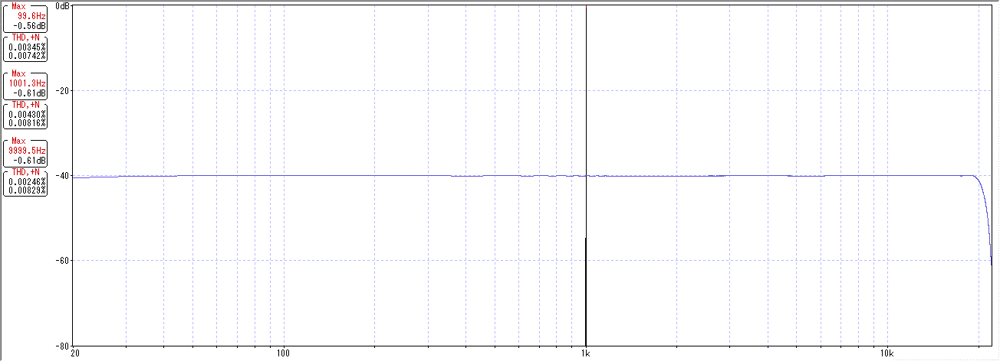
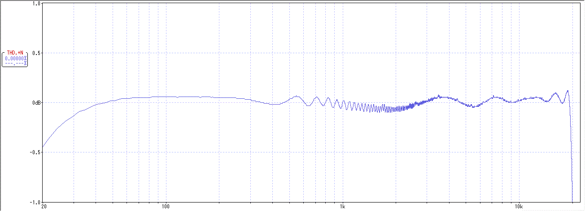
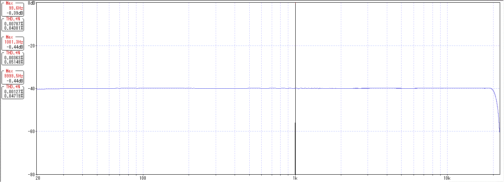

歪率・周波数特性 測定環境
2016年09月29日 カテゴリー：○○で音は変わるのか
自分のパソコンがどのような特性か調べました。ヘッドフォン出力からマイク入力へケーブルを接続して測定するだけです。WaveGene、WaveSpectraの設定もメモしておきます。（2016年11月13日 設定少し変更、画像差し替え）
【PC】
メインボリューム：100 録音ボリューム：5
【WaveGene】
[歪率測定] サイン波 100Hz 1kHz 10kHz FFT用に最適化 FFTサンプル周波数16384 0dB
[周波数特性測定] ユーザー波形 FLATSWEEP_016384 0dB
【WaveSpectra】
FFT サンプルデータ数16384 窓関数"なし（矩形）"
測定結果は下図です。波形が見やすいようにサンプルデータ数は少なめにしています。青い線が周波数特性です。

THD 0.004%、THD+N 0.009%程度となりました（100Hzと10kHzは結果のみ表示）。オーディオインターフェースを使えばもっとよくなると思いますが、私にはこれで充分です。周波数特性はほぼフラット特性です。±1dBまで拡大してみます。

聞き取るのは無理だと思いますが、0.1dBぐらい変化しているようです。
パソコンの出力電圧と入出力インピーダンスがどのくらいかも調べておきました。
【WaveGene】
サイン波 50Hz 0dB
【デジタルマルチメータ】
MotherTool MT-4510 家庭用コンセントでAC100V測定確認済
【PC】
メインボリューム→電圧
10→26mV 20→72mV 30→142mV 40→225mV 50→319mV
60→447mV 70→566mV 80→715mV 90→897mV 100→1.01V
出力インピーダンス 約83Ω（1kHz）
入力インピーダンス 約5kΩ（1kHz）
-2dB、PCボリューム30で私のギターと同じぐらいの出力電圧（110mV）となります。
測定に使うバッファーの特性を調べました。回路実験器その2（オペアンプ版）の前半部分です。
【PC】
メインボリューム：30 録音ボリューム：45

100Hzの歪率が少し悪くなりました。録音ボリュームを上げたせいかノイズも増えていますが、まぁ問題ないレベルだろうと思います。